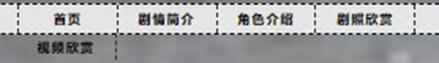
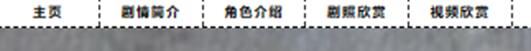

html
web报告
- 我这次网页设计的主题是介绍一部国产原创动漫《画江湖之不良人》，为此设计了五张页面，分别为主页，介绍作品的北京与作品的导演，成就等等，第二页为剧情介绍，描述作品的大致剧情，让网页浏览者能够对作品有一定了解，第三页为人物介绍，对作品的主人公以及相关重要角色作简要的介绍，第四页我截取了动漫中一些经典场剧照欣赏，第五页则是截取了动漫中最后一段视频给浏览者欣赏，能够对作品基本情况有所了解，比如建模、画风等等。
- <html lang= “en”>这是每个HTML开始的通用工作，表示页面使用的语言为英语。<meta charset="UTF-8">则是表示字符编码为UTF-8，这是为了中文字符的正确显示，避免出现乱码。<title>不良人</title>这个标签是整个网页的标题，会显示在浏览器的标题栏上。<link rel="stylesheet" href="css.css" />: <link>标签用来链接外部样式表文件，我用的是css，这里的href="css.css"表示样式表文件的路径。<style>: <style>标签用来定义内部样式，比如这个标签：padding-bottom: 100px代表这里设置了body元素的底部内边距为100px。<body style="background:urltupian/beijin.jpg);backgroundsize:100%100%;background-attachment fixed">: <body>标签包裹了整个网页的内容，通过style属性设置了页面的背景图片为tupian文件夹里边是beijin.jpg文件，并且让背景图片铺满整个页面。<header>: <header>标签表示网页的头部，用来放置标题或导航栏等内容。<ul style="font-size: 40px;">: <ul>标签表示一个无序列表，这里设置了字体大小为40px。 <nav>: <nav>标签表示页面的导航栏部分，用来展示页面之间的导航，主要按页面的按钮就可以直接跳转。<ul>这个标签表示一个无序列表，用于包含导航链接。<li><a href="zuye.html">主页</a></li>: <li>标签表示列表项，其中包含一个超链接<a>，链接到"zuye.html"页面，显示文本为"主页"。到这里为每个页面的导航栏，也就是五个也面顶部都是一样的，后面就不做详细介绍了。<div class=" ">: <div>标签用来创建一个容器，并设置了class属性为" "，代表了这一张网页是用来介绍动漫的相关基本信息。<div class="mr60">:这是一个具有class属性为"mr60"的<div>标签，用来包裹一组图片。<li class="f1">: <li>标签具有class属性为"f1"，用来表示列表项中的第一个项。<img src="tupian/ ">: <img>标签用来插入图片，src="tupian/03.jpg"表示图片文件的路径，在整个网页设计中我引入了很多图片，大多都是这个格式，但是由于我在网上找的这些图片大小，形状都差异比较大，所以我在css文件里边object-fit: cover; object-position: center;用了这个限制，这样图片就会取居中的部分，由于照片形状对网页带来的丑化也就减少了。这个<div>标签是一个具有“clear”的class属性，可以用于清除浮动。class="jddg"这个标签表示一个具有与class属性为jddg的<div>标签，用来包含一段文字介绍。<p>: <p>标签表示每一个段落，用来包裹文字内容。</body>: </body>标签结束了<body>标签的内容。</html>: </html>标签代表了整个HTML文件的结束。video src="tupian/sp.mp4" width="1000" controls</video> 这个video标签显示了一个视频播放器，视频文件名为"sp.mp4"，宽度设置为1000，并且提供了控制按钮，可以通过播放器进行视频的控制和操作，比如说暂停和点击进度条进行。而width：1000px;display: flex ;align-items: center; justify-content: center这是用cs对这个视频播放栏进行调整，让他居中，以及大小宽度。HTML基本介绍完了，下面对cs布局进行相关解释，首先在顶部用通配符选择器*表示匹配所有元素。margin: 0和padding: 0将所有元素的外边距和内边距设置为0以及用list-style: none去掉列表项的默认样式这是全局样式，然后是链接样式a{ text-decoration: none; color: black; } a选择器表示匹配所有的超链接元素，text-decoration: none;去掉超链接的下划线，color: black则是将超链接的颜色设置为黑色。接下来介绍页眉样式 width: 1000px; margin: 30px auto 0选择页面头部元素<header>，设置宽度为1000像素，上外边距为30像素，左右外边距自动居中，下外边距为0，然后是页面样式 body{ font: 14px "Microsoft YaHei"; background-color: #f5f5f5; position: relative; }设置页面的字体为14像素的"Microsoft YaHei"字体，背景颜色为浅灰色，并设置相对定位居中。.clear: both则定义一个类选择器.clear，用于清除浮动元素对父元素高度的影响最后还有导航栏，这是每个页面之间跳转的途径。header l li{ float: left; }选择页眉内的无序列表项，在水平方向浮动到左侧。nav li{ width: 200px; height:56px; line-height: 56px; border-right: 1px dashed #333; text-align: center; }：选择导航栏内的列表项，设置宽度为200像素、高度为56像素、行高为56像素，右边框为一条虚线，文本居中对齐。nav li ：first-child{ border-left: 1px dashed #333; }：选择导航栏内的第一个列表项，设置左边框为一条虚线。nav li a{ color: black; text-decoration: none; font-size: 26px; font-weight: 700; letter-spacing: 3px; }：选择导航栏内的超链接元素，设置颜色为黑色、去除下划线、字体大小为26像素、字体粗细为700、字母间距为3像素。nav li ：hover{ background-color: blue; }：当鼠标悬停在导航栏列表项上时，设置背景颜色为天蓝色，这里的hover是一个CSS的伪类选择器，它用于在鼠标悬停在一个元素上时应用特定的样式，也就是说，当用户将鼠标指针放在导航栏的某个列表项上时，该列表项的背景颜色会发生变化通过使用 hover 伪类选择器，可以为元素添加交互效果，提升用户体验。这样页面中包含了标题、导航栏、图片、文字和视频等内容，用于展示《画江湖之不良人》动画作品的相关信息。
- 在这个网页设计中，我也遇到了许多问题，通过上网查资料和在同学的帮助下也是成功解决了。第一个大问题就是在缩放整个网页的过程中，导航栏中最后一个悬着按钮会跑到下一行。就像这样而修改之后是这样这是因为导航栏的宽度不够容纳所有按钮：在缩小浏览器窗口或使用较小的设备屏幕时，导航栏的宽度可能变得有限。如果导航栏宽度无法容纳所有的按钮元素，浏览器会根据默认的布局规则将多余的按钮放到下一行显示。我就是增加导航栏长度，然后减小按钮尺寸解决了，导航栏width：1000px->width:1006px;按钮width:200px->width:198px。网上还有使用隐藏菜单/下拉菜单、使用滚动导航栏、响应式设计，这些是高级一点的解决方法。


- 还有一个问题就是图片布局问题，因为在网页制作过程中，需要很多图片，而网上的图片不管是规格尺寸都是我们那也决定的，如果要完整的在网页上展示图片，布局过程会很枯燥，而按照图片直接贴上去会影响网页的美感，降低阅读体验。而我在css文件里面加了img {object-fit: cover; object-position: center;}就解决了。而object-fit 和 object-position 这两个CSS的属性，用于控制 <img> 元素的展示方式。object-fit 属性可以定义如何调整图像以适应其容器。可选值：fill：拉伸图像以填充容器，可能导致图像变形。contain：缩放图像以完全适应容器，保持原始宽高比，可能会在容器内留有空白区域。cover：缩放图像以填充容器，保持原始宽高比，可能会在容器外部裁剪部分图像。none：保持原始图像尺寸，忽略容器尺寸。scale-down：根据原始图像尺寸和容器尺寸来确定是 contain 还是 none，选择占用空间较小的方式。默认值：fill。例子： img { object-fit: over; }这样设置后，图像将按比例缩放并填充容器，如果图像的宽高比与容器不一致，可能会被裁剪。object-position 属性可以定义图像在容器中的位置。可选值：可以使用关键字或百分比来指定位置。默认值：50% 50%，即居中对齐。例子： img { object-position: center; }这样设置后，图像将在容器内居中显示。